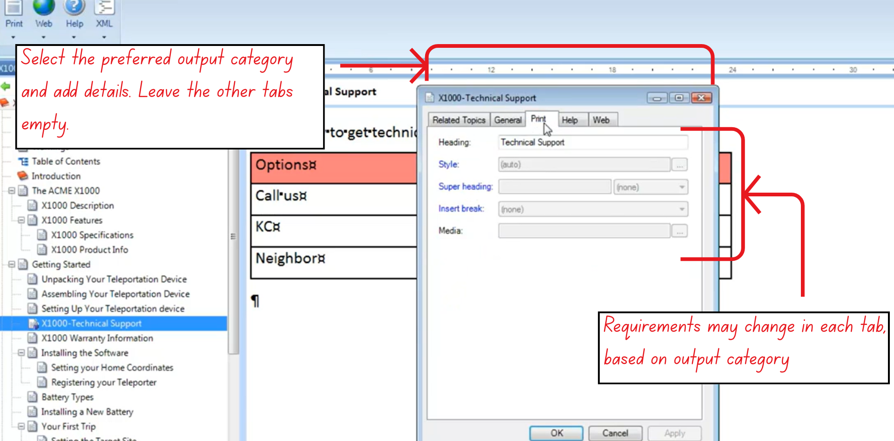

Publishing Outputs
This section explains how Author-it manages multi-format publishing through Print, Help, and Web output categories, and how the Publishing Pane can be used to publish multiple books in a batch.
Understanding Output Categories (Print, Help, Web)
Every object in Author-it contains three dedicated tabs - Print, Help, and Web, that determine how that object behaves when published to different output formats. These tabs are central to Author-it’s single-sourcing model.
Figure 12: The three main output categories in Author-it
Print Tab
Used when publishing to:
- Microsoft Word
Key properties managed here include:
- Assigned heading style
- Chapter start rules or section breaks
- Assigned Media Object controlling page layout
These settings determine how the content will appear in printed or PDF-based publications.
Help Tab
Used for electronic help systems.
This tab manages properties specific to Help outputs, such as:
- Context Strings
- Context IDs
These are required for context-sensitive help but do not affect print or web output.
Web Tab
Used for:
- HTML
- XHTML
- Other web-based formats
This tab includes properties required for web rendering and navigation.
How Single-Sourcing Works
Author-it allows a single content object to be published in multiple formats with different publishing rules applied automatically:
- Output Checkboxes determine whether the object is eligible for Print, Help, or Web publishing.
- During publishing, Author-it reads the corresponding tab (Print/Help/Web) and applies its properties to generate the correct formatted output.
This lets users reuse the same Topic or Book object across all outputs without duplicating content.
Publishing Pane (Batch Publishing)
The Publishing Pane provides a more flexible and powerful way to publish content compared to the Publishing Ribbon.

Figure 13: A visual guide on how to publish multiple books at the same time
Purpose and Key Difference
- The Publishing Ribbon can publish only one book at a time.
- The Publishing Pane can publish multiple books sequentially by assembling them into a batch.
Creating a Publishing Batch
- Select the desired output format (e.g., PDF, HTML).
- Choose the books for publishing.
- Click Add to Batch for each book.
- Once all books are added, click Submit Batch to publish them one after another.
This is particularly useful when:
- Publishing multiple versions of documentation,
- Preparing outputs for multiple products,
- Or managing larger publication cycles.
Additional Features
The Publishing Pane may display optional sections related to:
- Tasks
- Projects
These belong to the Project Manager module (a separately purchased add-on). If an environment doesn’t use this module, these sections can be disabled.